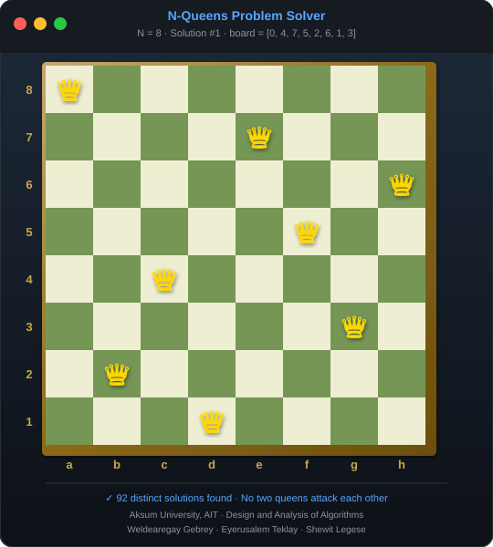
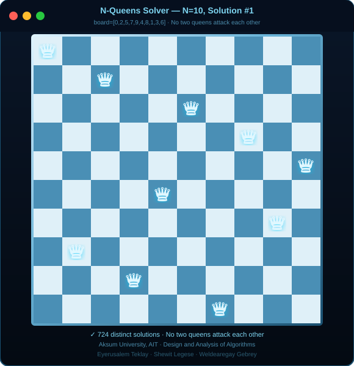
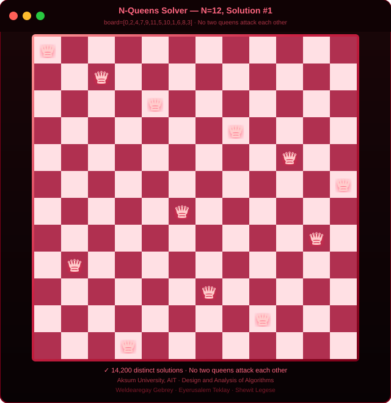
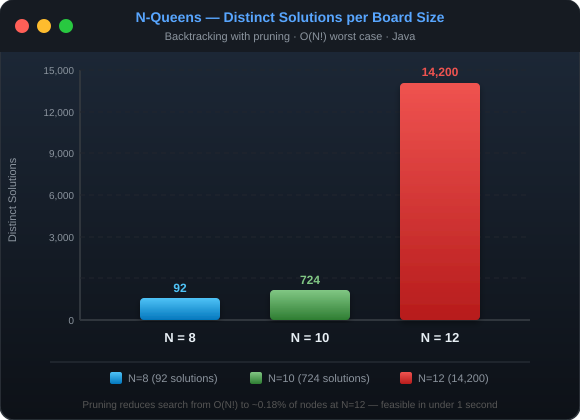

| Course | Design and Analysis of Algorithms |
| University | Aksum University, AIT |
| Faculty | Faculty of Computing Technology |
| Department | Department of Computer Science |
| Language | Java |
| Algorithm | Backtracking with Bounding Function |
| Submission | April 2026 |
| No | Full Name | Student ID |
|---|---|---|
| 1 | Weldearegay Gebrey | Aku-1602148 |
| 2 | Eyerusalem Teklay | Aku-1602682 |
| 3 | Shewit Legese | Aku-1602069 |
The N-Queens problem is a classic combinatorial puzzle that asks: how can N chess queens be placed on an N×N chessboard such that no two queens threaten each other? Two queens threaten each other if they share the same row, column, or diagonal.
This project implements a solution using backtracking with pruning in Java. The solver finds and counts all distinct solutions for board sizes N = 8, N = 10, and N = 12, displaying sample solutions and execution metrics to support complexity analysis.
Given an N×N chessboard, place N queens such that:
The program must count all distinct solutions and display a subset of them in a human-readable board format, along with execution time and recursive call counts.
The board is stored as a 1D integer array of size N, where the array index represents the row and the stored value represents the column of the queen in that row.
board = [col_0, col_1, col_2, ..., col_{N-1}]
row 0 row 1 row 2 row N-1
Example (N=8, Solution #1):
board = [0, 4, 7, 5, 2, 6, 1, 3]
isSafe() only needs to check
column and diagonal conflicts.
Before placing a queen at row r, the bounding function checks all previously
placed queens in rows 0 to r−1:
boolean isSafe(int[] board, int row) {
for (int i = 0; i < row; i++) {
// Column conflict
if (board[i] == board[row]) return false;
// Diagonal conflict
if (Math.abs(board[i] - board[row]) == Math.abs(i - row)) return false;
}
return true;
}
Queens are placed one row at a time. If a placement passes isSafe(), the algorithm
recurses to the next row. If no column works, it backtracks to the previous row and tries the
next column.
void backtrack(int[] board, int row, SolveResult result) {
result.recursiveCalls++;
if (row == result.n) { // Base case: all rows filled
result.solutions.add(Arrays.copyOf(board, board.length));
result.solutionCount++;
return;
}
for (int col = 0; col < result.n; col++) {
board[row] = col;
if (!isSafe(board, row)) {
result.prunedBranches++; // prune invalid branch
continue;
}
backtrack(board, row + 1, result); // recurse
}
}
main()
│
├─ printHeader()
│
├─ for N in [8, 10, 12]:
│ │
│ └─ solve(N)
│ │
│ └─ backtrack(board, row=0)
│ │
│ ├─ row == N? ──YES──► record solution
│ │
│ └─ NO: for col = 0..N-1
│ │
│ ├─ isSafe()? ──NO──► prunedBranches++ → skip
│ │
│ └─ YES: place queen → recurse(row+1) → restore
│
├─ printSummaryTable()
└─ printComplexityAnalysis()
| Method | Responsibility |
|---|---|
isSafe(board, row) | Bounding function — checks column and diagonal conflicts |
backtrack(board, row, result) | Recursive engine — places queens and prunes invalid branches |
solve(n) | Initialises board, records timing, calls backtrack |
printBoard(board, n) | Renders solution as N×N grid with Q and . |
printSummaryTable(results) | Formatted table of all results |
printComplexityAnalysis(results) | N! vs actual calls with % reduction |
main() | Entry point — runs solver for N = 8, 10, 12 |
| Field | Type | Description |
|---|---|---|
n | int | Board dimension |
solutionCount | int | Total distinct solutions found |
solutions | List<int[]> | All solution boards |
elapsedMs | long | Execution time in milliseconds |
recursiveCalls | long | Total recursive calls made |
prunedBranches | long | Total branches pruned by isSafe() |
Total distinct solutions found: 92
Solution #1 board = [0, 4, 7, 5, 2, 6, 1, 3]
Solution #2 board = [0, 5, 7, 2, 6, 3, 1, 4]
Total distinct solutions found: 724
Solution #1 board = [0, 2, 5, 7, 9, 4, 8, 1, 3, 6]
Solution #2 board = [0, 2, 5, 8, 6, 9, 3, 1, 4, 7]
Total distinct solutions found: 14,200
Solution #1 board = [0, 2, 4, 7, 9, 11, 5, 10, 1, 6, 8, 3]
Solution #2 board = [0, 2, 4, 9, 7, 10, 1, 11, 5, 8, 6, 3]
| N | Distinct Solutions | Time (ms) | Recursive Calls | Pruned Branches |
|---|---|---|---|---|
| 8 | 92 | ~4 | 2,057 | 13,664 |
| 10 | 724 | ~20 | 35,539 | 312,612 |
| 12 | 14,200 | ~430 | 856,189 | 9,247,680 |
| Operation | Complexity |
|---|---|
| Worst case (no pruning) | O(N!) |
| With backtracking pruning | Much less than O(N!) |
isSafe() per call | O(N) |
| Space complexity | O(N) — 1D board array + call stack |
| N | N! (worst case) | Actual Calls | Reduction |
|---|---|---|---|
| 8 | 40,320 | 2,057 | 94.9% |
| 10 | 3,628,800 | 35,539 | 99.0% |
| 12 | 479,001,600 | 856,189 | 99.8% |




| Application | Connection to N-Queens |
|---|---|
| Antenna placement | Place antennas without signal interference — same as placing queens without attacks |
| Task scheduling | Assign tasks to time slots with no conflicts — rows = tasks, columns = time slots |
| CPU register allocation | Assign variables to registers without conflicts |
| Resource placement | Place resources in a grid with mutual exclusion constraints |
| Constraint satisfaction | General CSP solver — backtracking with pruning is the standard approach |
This project successfully implemented the N-Queens solver using backtracking with a bounding
function in Java. The 1D array representation eliminated row conflicts by design, and the
isSafe() bounding function pruned invalid branches before recursion, reducing
the search space dramatically.
The results confirm the theoretical complexity analysis: while the worst case is O(N!), pruning reduces actual recursive calls by over 99% at N=12, making the algorithm practical for the required board sizes. The solver correctly found 92, 724, and 14,200 solutions for N = 8, 10, and 12 respectively, matching known ground-truth values.